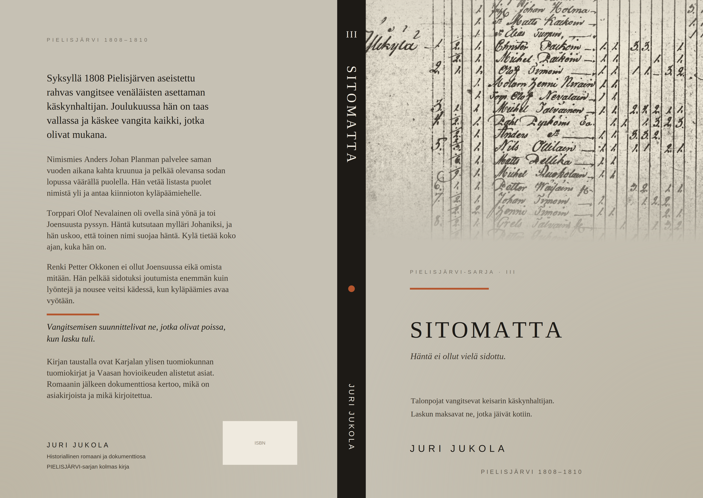
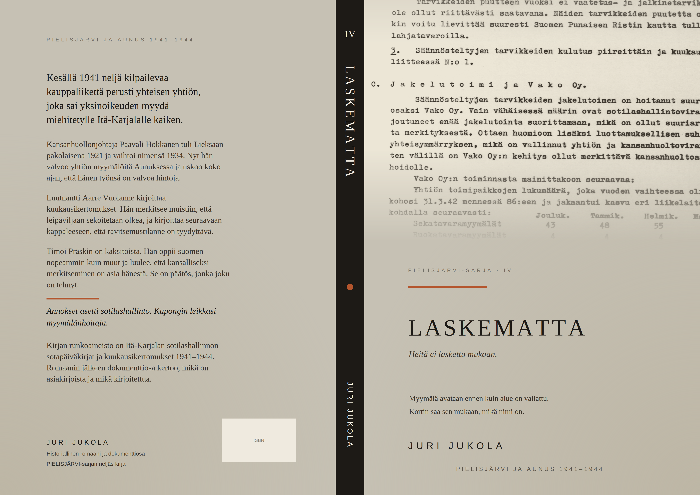
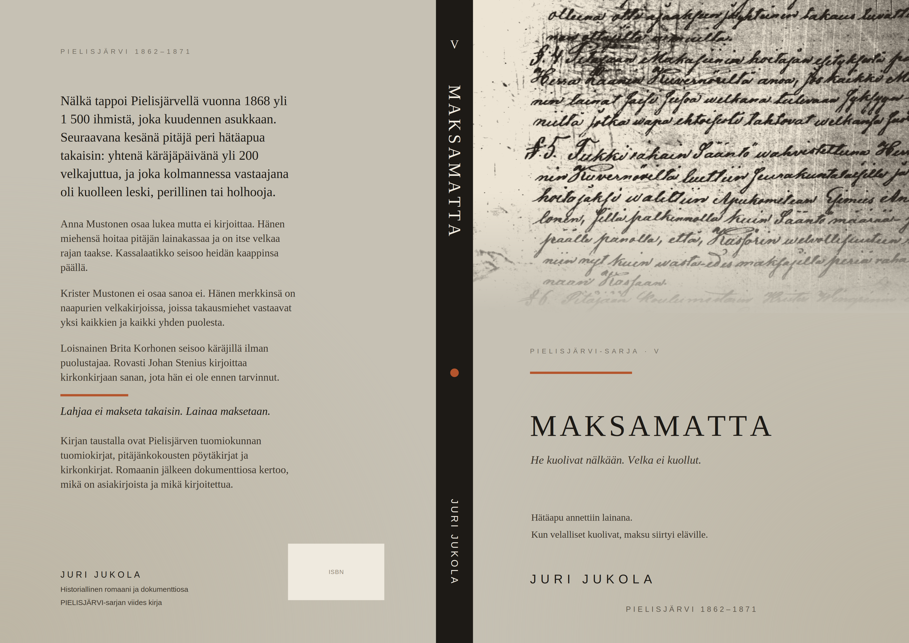

Uusin · PIELISJÄRVI-sarja
Sama pitäjä, neljä sukupolvea ja kahdensadan vuoden matka. PIELISJÄRVI-sarja kertoo ihmisistä, joiden asia on yhä asiakirjassa — käräjien pöytäkirjassa, henkikirjassa, kuukausikertomuksessa.
Sarjan kirjat ovat lyhyitä historiallisia romaaneja, ja jokainen on oma kokonaisuutensa: sama pitäjä, eri sukupolvi ja eri asiakirjat. Kaksi ensimmäistä kertovat isästä ja pojasta, jotka kumpikin olivat Pielisjärven kirkkoherroja: Korpi-Jaakosta 1740-luvulla ja Koski-Jaakosta 1790-luvulla. Kolmas siirtyy Suomen sotaan 1808–1809, eikä sen päähenkilö ole pappi vaan nimismies, torppari ja renki. Neljäs hyppää 1900-luvulle: Lieksa otti itäkarjalaiset vastaan kahdesti, pakolaisina 1920-luvulla ja evakkoina kesäkuussa 1944, ja kirja kulkee sen matkan rajan yli ja takaisin. Viides palaa 1860-luvun nälkävuosiin, jolloin pitäjä antoi hätäavun lainana ja peri sen myöhemmin takaisin kuolleiden leskiltä ja takausmiehiltä.
Lähteet vaihtuvat kirjan mukana. Kolmessa ensimmäisessä ja viidennessä ne ovat Kansallisarkiston tuomiokirjoja, henkikirjoja, pitäjänkokousten pöytäkirjoja ja kirkonkirjoja, neljännessä miehityshallinnon omia kuukausikertomuksia ja miehitetyllä alueella painettua paikallislehteä. Yksi asia pysyy: tapahtumat, päivämäärät ja luvut ovat asiakirjoista, ja romaanin jälkeen tuleva dokumenttiosa kertoo, mikä on asiakirjasta ja mikä kirjoitettua ja mitä ei tiedetä. Dokumenttiosan takia sarja ilmestyy tekijän omalla nimellä.
Näytteet ovat luonnoksia, eivät valmista tekstiä. Etenkin lukunäytteissä on kokeiltu avoimesti eri tapoja kertoa: kenen silmin tapahtumat nähdään, kuinka paljon kertoja selittää ja millä rytmillä teksti kulkee. Osa kokeiluista jää kirjaan ja osa karsiutuu.
Kirja syntyy vähitellen, kun tekstiä työstää, lukee uudelleen ja saa siitä kommentteja. Siksi palaute on tervetullutta, myös se joka kertoo, missä kohtaa lukeminen tökkäsi: jlintumies@gmail.com

Toimittamatta
Kirkkoherra Jaakko Stenius nuorempi on syytettynä maanpetoksesta. Vaasan hovioikeus määräsi tutkinnan vuonna 1790, mutta sitä ei ole pidetty, eikä kirkkoherralle kerrota asiasta mitään.

Jäävätty
Kirkkoherra Jaakko Stenius vanhempi ajaa käräjillä sisarentyttärensä asiaa omaa apulaispappiaan vastaan. Kaksi vuotta kestävässä jutussa ratkaistaan ensin, kenen sanaa kuullaan, ja vasta sitten, mitä tapahtui.

Sitomatta
Pielisjärven aseistettu rahvas vangitsee syksyllä 1808 venäläisten asettaman käskynhaltijan. Joulukuussa hän on taas vallassa ja käskee vangita kaikki, jotka olivat mukana — ja johtaja on jo Ruotsin puolella.

Laskematta
Lokakuussa 1941 kansanhuollonjohtaja Pauli Jukola määrätään Aunukseen. Hän tuli Suomeen 14-vuotiaana vuonna 1919, vanhemmat jäivät rajan taakse, eikä heistä ole tietoa. Nyt hänen käytössään on alueen väestökortisto.

Maksamatta
Keväällä 1868 Pielisjärvellä kuoli joka kuudes asukas. Hätäapu oli annettu lainana, ja kun velalliset kuolivat, velka ei kuollut heidän mukanaan. Seuraavana kesänä pitäjä kutsui koolle käräjät periäkseen sen takaisin.
Kansikuvat ovat kirjojen omista asiakirjoista. Toimittamatta-kirjan kannessa on vuoden 1793 käräjien pykälä 14, Jäävätyn kannessa helmikuun 1747 kohta, jossa todistajaa vastaan esitetään jäävi, ja Sitomattan kannessa Kuopion läänin henkikirja vuodelta 1810: Ylikylän talo numero kaksi, ja siinä peräkkäin mylläri Henric Nevalainen ja torppari Olof Nevalainen. Laskemattan kansi ei ole käsialaa vaan konekirjoitusta: Itä-Karjalan sotilashallinnon kertomuksen sivu, jonka väliotsikkona on Jakelutoimi ja Vako Oy. Maksamattan kannessa on Pielisjärven pitäjänkokouksen pöytäkirja marraskuulta 1865, jossa tukkirahakassan hoitajaksi valitaan hätäapukomitean esimies ja hänen tehtäväkseen määrätään periä rahat aikanaan kassaan.